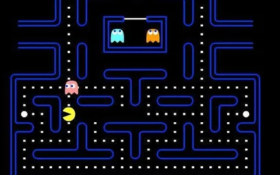

Witaj użytkowniku!
Strona ta została poświęcona grom komputerowym
Autor: Maciej SztabińskiCzym jest gra komputerowa?
Gra komputerowa – rodzaj oprogramowania komputerowego przeznaczonego do celów rozrywkowych bądź edukacyjnych (rozrywka interaktywna) i zazwyczaj wymagającego od użytkownika (gracza) pokonywania wyzwań wyznaczonych przez jej twórców. komputerowe mogą być uruchamiane na komputerach osobistych, specjalnych automatach, konsolach do gry, telewizorach, telefonach komórkowych oraz innych mobilnych urządzeniach, nazywanych łącznie platformami sprzętowymi. Zadania stawiane przed graczem w grach komputerowych różnią się w zależności od gatunku i mogą polegać na przykład na rozwiązaniu zadania logicznego, eliminacji wirtualnych przeciwników czy też rywalizacji ze sztuczną inteligencją bądź innymi graczami (gra wieloosobowa). Interaktywna rozrywka w celach zawodowych nosi nazwę sportu elektronicznego (ang. esports).
Gry komputerowe wywodzą się z gier planszowych, towarzyskich, fabularnych oraz różnych dyscyplin sportowych. Początki elektronicznego oprogramowania przeznaczonego do celów rozrywkowych wiązać należy z prototypami konstruowanymi na amerykańskich uczelniach. Gry komputerowe stały się produktem masowym za sprawą popularności konsol telewizyjnych i automatów w latach 70. XX wieku.